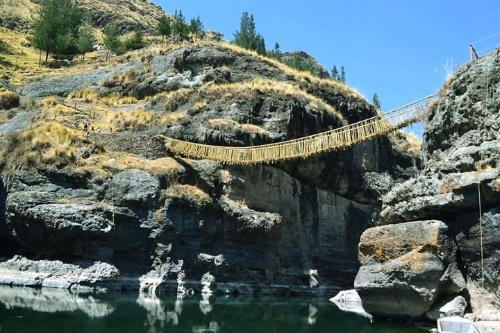

Q'eswachaka Bridge Tour - Full Day
Q'eswachaka Bridge Tour - Full Day
The Incans had a great network of roads that connected the vast territories of their empire. One main road, Qhapag Ñan, featured hanging bridges made from vegetable fibers. One such bridge, Q'eswachaka, has been maintained through the generations for over 500 years and still stands today. It is located on the Apurímac River, some 3,700 meters above sea level, and the last of the Incan Suspension Bridges. Every year, more than 1,000 people from four communities gather to repair and maintain this bridge, an ancestral ritual recognized in 2013 by UNESCO.
DESCRIPTION
We start our day bright and early at 4:30 am, picking you up from your hotel. After leaving Cusco, our first stop is Combapata, where we will enjoy a continental breakfast in a traditional family home and have some time to stretch our legs.
From there, we pass through the district of Yanaoca until arriving in Q'ewe, where Q'eswachaka is located. We will take our time exploring this 28.67 meter long bridge as well as the surrounding area. Your guide will share not only the history of this area but also our modern understanding of Incan engineering.
After visiting Q'eswachaka, we will return to Combapata for lunch and then take a short walk to a viewpoint of four lakes: Pampamarca, Asnacqocha, Acopía, and Pomacanchi. Finally, we will return to Cusco, reaching your hotel between 16:30 and 17:00.
DETAILS
Notable Sights Visited: Combapata, Incan Bridge Q’eswachaka, and the lakes of Pampamarca, Asnacqocha, Acopía and Pomacanchi.
Duration: 1 day
Difficulty: None
Languages: English, Spanish
Departure Time: 4:30 am to 5:00 am
Return time: 16:30 to 17:00
Minimum group size: 3 people
Maximum group size: 20 people
Seasonality: All year round, recommended April - November
Maximum altitude: 3,800 meters
INCLUDED
All Transportation
Professional bilingual guide (Spanish or English)
Breakfast and lunch (vegetarian options available)
First aid kit
NOT INCLUDED
Entrance fees to Q'eswachaka (10 soles)
Dinner
Tip
WHAT TO BRING
Comfortable walking clothes
At least 1L water
Camera and batteries
Sun protection (sunglasses, hat)
Snacks (energy bars, dried fruit, chocolate, etc.)
Peronal spending money